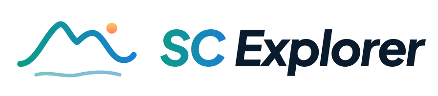
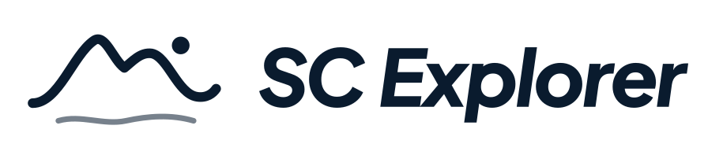

<meta charset="utf-8">
<title>SC Explorer Logotipo</title>
<meta name="claude:viewport-fit-sides" content="cover">
<link rel="preconnect" href="https://fonts.googleapis.com">
<link rel="stylesheet" href="https://fonts.googleapis.com/css2?family=Plus+Jakarta+Sans:ital,wght@0,600;0,700;0,800;1,800&family=Inter:wght@400;500;600&display=swap">
<style>
/* Layout: guia de marca em coluna única; cada versão num "palco" com o fundo em que deve ser usada. */
:root{
  --fundo:#F6F2EB; --sup:#FFFFFF; --sup-2:#EEF2F5; --borda:rgba(10,27,46,.11);
  --texto:#0A1B2E; --texto-2:#3F5368; --texto-3:#5F7286; --destaque:#0B9C86; --erro:#C8402F;
  --noite:#050D18; --areia:#F3EFE7;
  --f-titulo:"Plus Jakarta Sans",ui-sans-serif,system-ui,sans-serif;
  --f-texto:"Inter",ui-sans-serif,system-ui,sans-serif;
  --f-mono:ui-monospace,SFMono-Regular,Menlo,Consolas,monospace;
  color-scheme:light;
}
@media (prefers-color-scheme:dark){:root:not([data-theme="light"]){
  --fundo:#040B15; --sup:#0A1A2C; --sup-2:#10263D; --borda:rgba(255,255,255,.09);
  --texto:#EEF4FA; --texto-2:#A9BCCF; --texto-3:#7D92A8; --destaque:#1FE0BE; --erro:#FF7A62; color-scheme:dark}}
:root[data-theme="dark"]{
  --fundo:#040B15; --sup:#0A1A2C; --sup-2:#10263D; --borda:rgba(255,255,255,.09);
  --texto:#EEF4FA; --texto-2:#A9BCCF; --texto-3:#7D92A8; --destaque:#1FE0BE; --erro:#FF7A62; color-scheme:dark}
*{box-sizing:border-box}
body{background:var(--fundo);color:var(--texto);font:15px/1.6 var(--f-texto);-webkit-font-smoothing:antialiased;margin:0}
.wrap{max-width:1120px;margin:0 auto;padding-left:max(16px,env(safe-area-inset-left,0px));padding-right:max(16px,env(safe-area-inset-right,0px));padding-block:36px 80px;display:grid;gap:64px}
h1,h2,h3{font-family:var(--f-titulo);margin:0;letter-spacing:-.02em;text-wrap:balance}
h2{font-size:clamp(24px,3vw,30px);font-weight:800}
h3{font-size:15px;font-weight:700}
p{margin:0}
img{display:block;max-width:100%}
code{font:500 12.5px var(--f-mono);color:var(--texto-2)}
.rot{font:600 11px var(--f-texto);letter-spacing:.14em;text-transform:uppercase;color:var(--destaque)}
.cab{display:grid;gap:10px;max-width:68ch}
.cab p{color:var(--texto-2)}
section{display:grid;gap:22px}

/* abertura */
.abre{display:grid;gap:26px}
.abre .palco{min-height:260px}
.abre .palco img{width:min(560px,82%)}
.abre h1{font-size:clamp(30px,4.4vw,44px);font-weight:800;letter-spacing:-.035em}
.meta{font:500 12px var(--f-texto);letter-spacing:.12em;text-transform:uppercase;color:var(--texto-3)}

/* palcos: o fundo é parte da regra, por isso vale nos dois temas da página */
.palco{border-radius:20px;border:1px solid var(--borda);display:grid;place-items:center;padding:34px 22px;min-height:190px;position:relative;overflow:hidden}
.p-noite{background:radial-gradient(120% 120% at 20% 0%,#10263D,#050D18 70%)}
.p-areia{background:#F3EFE7}
.p-branco{background:#FFFFFF}
.p-foto{background:#0b1622}
.palco.p-foto>img.bg{position:absolute;inset:0;width:100%;height:100%;max-width:none;object-fit:cover}
.p-foto::after{content:"";position:absolute;inset:0;background:linear-gradient(180deg,rgba(5,13,24,.15),rgba(5,13,24,.55))}
.p-foto>img:not(.bg){position:relative;z-index:1}
.grade{display:grid;grid-template-columns:repeat(auto-fit,minmax(min(100%,320px),1fr));gap:16px}
.versao{display:grid;gap:10px;min-width:0}
.versao .palco img{width:min(360px,86%)}
.versao .palco img.v{width:min(220px,62%)}
.versao .palco img.s{width:min(150px,44%)}
.versao .palco img.i{width:112px;border-radius:26px;box-shadow:0 14px 34px rgba(0,0,0,.35)}
.legenda{display:grid;gap:2px}
.legenda b{font:700 14px var(--f-titulo)}
.legenda span{font-size:13px;color:var(--texto-2)}
.legenda code{font-size:11.5px;color:var(--texto-3);overflow-wrap:anywhere}

/* construção */
.const{display:grid;grid-template-columns:minmax(0,1.3fr) minmax(0,1fr);gap:18px;align-items:start}
.diagrama{background:radial-gradient(120% 120% at 20% 0%,#10263D,#050D18 70%);border-radius:20px;padding:22px;border:1px solid var(--borda)}
.diagrama svg{width:100%;height:auto;display:block}
.diagrama text{font:600 11px var(--f-texto);fill:#A9BCCF}
.regras{display:grid;gap:12px;margin:0;padding:0;list-style:none}
.regras li{background:var(--sup);border:1px solid var(--borda);border-radius:16px;padding:14px 16px;display:grid;gap:3px}
.regras li b{font:700 14px var(--f-titulo)}
.regras li span{font-size:13.5px;color:var(--texto-2)}

/* cores */
.cores{display:grid;grid-template-columns:repeat(auto-fill,minmax(min(100%,170px),1fr));gap:12px}
.cor{border-radius:16px;overflow:hidden;border:1px solid var(--borda);background:var(--sup)}
.cor i{display:block;height:74px}
.cor div{padding:10px 12px;display:grid;gap:1px}
.cor b{font:700 13.5px var(--f-titulo)}
.cor code{font-size:11.5px}
.cor span{font-size:12px;color:var(--texto-3)}
.grupo{display:grid;gap:10px}
.grupo>h3{color:var(--texto-2)}

/* tipografia */
.tipos{display:grid;grid-template-columns:repeat(auto-fit,minmax(min(100%,420px),1fr));gap:16px}
.tipo{background:var(--sup);border:1px solid var(--borda);border-radius:20px;padding:22px;display:grid;gap:12px;min-width:0}
.amostra-t{font:italic 800 clamp(34px,5vw,46px)/1.05 var(--f-titulo);letter-spacing:-.035em}
.amostra-t b{background:linear-gradient(90deg,#0B9C86,#1C7FD1);-webkit-background-clip:text;background-clip:text;color:transparent}
@media (prefers-color-scheme:dark){:root:not([data-theme="light"]) .amostra-t b{background-image:linear-gradient(90deg,#1FE0BE,#46C2FF)}}
:root[data-theme="dark"] .amostra-t b{background-image:linear-gradient(90deg,#1FE0BE,#46C2FF)}
.amostra-x{font:400 17px/1.55 var(--f-texto);color:var(--texto-2)}
.tipo dl{margin:0;display:grid;grid-template-columns:auto minmax(0,1fr);gap:4px 14px;font-size:13px}
.tipo dt{color:var(--texto-3)} .tipo dd{margin:0}

/* usos */
.usos{display:grid;grid-template-columns:repeat(auto-fit,minmax(min(100%,240px),1fr));gap:14px}
.uso{display:grid;gap:8px;min-width:0}
.uso .palco{min-height:150px;padding:24px 18px}
.uso .palco img{width:min(240px,90%)}
.selo{display:inline-flex;align-items:center;gap:6px;font:700 12px var(--f-texto)}
.selo.nao{color:var(--erro)} .selo.sim{color:var(--destaque)}
.uso p{font-size:13px;color:var(--texto-2)}
.estica{transform:scaleX(1.45)}
.gira{transform:rotate(-12deg)}
.cor-errada{filter:hue-rotate(150deg) saturate(1.6)}
.contorno{filter:drop-shadow(0 0 0 #fff) drop-shadow(2px 0 0 #FF7A59) drop-shadow(-2px 0 0 #FF7A59)}

/* arquivos */
.tabela{overflow-x:auto;border:1px solid var(--borda);border-radius:16px;background:var(--sup)}
table{border-collapse:collapse;width:100%;min-width:560px;font-size:13.5px}
th,td{text-align:left;padding:11px 14px;border-top:1px solid var(--borda);vertical-align:top}
thead th{border-top:0;font:600 11px var(--f-texto);letter-spacing:.1em;text-transform:uppercase;color:var(--texto-3)}
td code{white-space:nowrap}
.nota{font-size:13px;color:var(--texto-3);max-width:70ch}
@media (max-width:760px){.const{grid-template-columns:1fr}}
</style>

<main class="wrap">
  <header class="abre">
    <span class="meta">Guia da marca · versão 1 · 23/11/2026</span>
    <div class="palco p-noite"></div>
    <div class="cab">
      <h1>O logotipo do SC Explorer</h1>
      <p>O símbolo é a Ilha de Santa Catarina num traço só: os morros sobem, descem e terminam em onda, com o sol se pondo no canto. Embaixo, uma linha de mar. O nome vem em itálico pesado, com o "SC" no degradê da Lagoa para o céu. Esta pasta tem cada versão em SVG (vetor, para gráfica e telas) e em PNG com fundo transparente.</p>
    </div>
  </header>

  <section aria-labelledby="t-versoes">
    <div class="cab"><span class="rot">Versões</span><h2 id="t-versoes">Uma versão para cada fundo</h2>
      <p>A cor do fundo decide a versão. Em fundo escuro, use a escura; em fundo claro, a clara. Sobre foto, só com uma faixa escura por baixo, como no app.</p></div>
    <div class="grade">
      <div class="versao"><div class="palco p-noite"></div>
        <div class="legenda"><b>Horizontal · fundo escuro</b><span>A principal. Site, app, redes, apresentações.</span><code>assinatura-horizontal-escuro</code></div></div>
      <div class="versao"><div class="palco p-areia"></div>
        <div class="legenda"><b>Horizontal · fundo claro</b><span>Papel, fundo branco ou areia, tema claro do app.</span><code>assinatura-horizontal-claro</code></div></div>
      <div class="versao"><div class="palco p-noite"></div>
        <div class="legenda"><b>Vertical · fundo escuro</b><span>Espaços quadrados ou altos: post, capa, cartaz.</span><code>assinatura-vertical-escuro</code></div></div>
      <div class="versao"><div class="palco p-areia"></div>
        <div class="legenda"><b>Vertical · fundo claro</b><span>A mesma, para papel e fundos claros.</span><code>assinatura-vertical-claro</code></div></div>
      <div class="versao"><div class="palco p-foto"></div>
        <div class="legenda"><b>Branca</b><span>Sobre foto (com faixa escura) e impressão em uma cor.</span><code>assinatura-horizontal-branco · assinatura-vertical-branco</code></div></div>
      <div class="versao"><div class="palco p-branco"></div>
        <div class="legenda"><b>Uma cor (azul-noite)</b><span>Carimbo, gravação, fax, documento em preto e branco.</span><code>assinatura-horizontal-preto · assinatura-vertical-preto</code></div></div>
      <div class="versao"><div class="palco p-noite"></div>
        <div class="legenda"><b>Símbolo sozinho</b><span>Quando o nome já aparece perto: perfil de rede social, marca d'água, carimbo.</span><code>simbolo-escuro · -claro · -branco · -preto</code></div></div>
      <div class="versao"><div class="palco p-areia"></div>
        <div class="legenda"><b>Ícone do app</b><span>Tela do celular e aba do navegador. Não muda com o tema.</span><code>icone-app · icone-app-mascara · favicon-32</code></div></div>
    </div>
  </section>

  <section aria-labelledby="t-const">
    <div class="cab"><span class="rot">Construção</span><h2 id="t-const">Proporções e respiro</h2>
      <p>As medidas partem da altura do nome. Mantenha estas proporções; os arquivos já vêm montados assim.</p></div>
    <div class="const">
      <div class="diagrama">
        <svg viewBox="0 0 640 230" role="img" aria-label="Diagrama: símbolo com 1,47 vezes a altura do nome, espaço de 0,4 e área de proteção de um quarto">
          <rect x="22" y="22" width="596" height="168" fill="none" stroke="#46C2FF" stroke-opacity=".5" stroke-dasharray="5 5"/>
          <image href="svg/assinatura-horizontal-escuro.svg" x="22" y="22" width="596" height="130.8"/>
          <line x1="22" y1="196" x2="45" y2="196" stroke="#FFD166" stroke-width="2"/>
          <text x="22" y="214">área de proteção = ¼ do nome</text>
          <line x1="606" y1="49" x2="606" y2="146" stroke="#1FE0BE" stroke-width="2"/>
          <text x="470" y="214">símbolo = 1,47 × altura do nome</text>
        </svg>
      </div>
      <ul class="regras">
        <li><b>Área de proteção</b><span>Deixe livre, em volta da marca, ¼ da altura do nome. Nenhum texto ou borda entra nesse espaço. Os arquivos já trazem essa margem.</span></li>
        <li><b>Tamanho mínimo</b><span>Horizontal: 120 px de largura na tela, ou 32 mm impresso. Vertical: 80 px ou 22 mm. Símbolo sozinho: 24 px ou 7 mm.</span></li>
        <li><b>Nome e símbolo juntos</b><span>Na assinatura, o símbolo e o nome nunca se separam nem trocam de lugar.</span></li>
      </ul>
    </div>
  </section>

  <section aria-labelledby="t-cores">
    <div class="cab"><span class="rot">Cores</span><h2 id="t-cores">A paleta do litoral</h2>
      <p>Lagoa e céu fazem o degradê da marca. O sol aparece só no símbolo e em destaques pequenos. Noite e areia são os fundos dos dois temas do app.</p></div>
    <div class="grupo"><h3>Marca, em fundo escuro</h3>
      <div class="cores">
        <div class="cor"><i style="background:#1FE0BE"></i><div><b>Lagoa</b><code>#1FE0BE</code><span>RGB 31 224 190</span></div></div>
        <div class="cor"><i style="background:#46C2FF"></i><div><b>Céu</b><code>#46C2FF</code><span>RGB 70 194 255</span></div></div>
        <div class="cor"><i style="background:#FFD166"></i><div><b>Sol</b><code>#FFD166</code><span>RGB 255 209 102</span></div></div>
        <div class="cor"><i style="background:#FF7A59"></i><div><b>Coral</b><code>#FF7A59</code><span>RGB 255 122 89</span></div></div>
        <div class="cor"><i style="background:#050D18"></i><div><b>Noite</b><code>#050D18</code><span>RGB 5 13 24 · fundo escuro</span></div></div>
      </div></div>
    <div class="grupo"><h3>Marca, em fundo claro</h3>
      <div class="cores">
        <div class="cor"><i style="background:#0B9C86"></i><div><b>Lagoa funda</b><code>#0B9C86</code><span>RGB 11 156 134</span></div></div>
        <div class="cor"><i style="background:#1C7FD1"></i><div><b>Céu fundo</b><code>#1C7FD1</code><span>RGB 28 127 209</span></div></div>
        <div class="cor"><i style="background:#0A1B2E"></i><div><b>Azul-noite</b><code>#0A1B2E</code><span>RGB 10 27 46 · texto</span></div></div>
        <div class="cor"><i style="background:#F3EFE7"></i><div><b>Areia</b><code>#F3EFE7</code><span>RGB 243 239 231 · fundo claro</span></div></div>
      </div></div>
    <div class="grupo"><h3>Só no app: lotação e alerta</h3>
      <div class="cores">
        <div class="cor"><i style="background:#34D399"></i><div><b>Baixa</b><code>#34D399</code><span>lotação baixa, via livre</span></div></div>
        <div class="cor"><i style="background:#FFC542"></i><div><b>Média</b><code>#FFC542</code><span>lotação média, via lenta</span></div></div>
        <div class="cor"><i style="background:#FF5C5C"></i><div><b>Alta</b><code>#FF5C5C</code><span>lotação alta, via parada</span></div></div>
      </div>
      <p class="nota">Essas três cores têm significado. Não use em peças de marca, para não parecer aviso.</p></div>
  </section>

  <section aria-labelledby="t-tipo">
    <div class="cab"><span class="rot">Tipografia</span><h2 id="t-tipo">Duas famílias, as duas grátis</h2>
      <p>As duas são do Google Fonts, com licença aberta (OFL): podem ser usadas em qualquer peça, impressa ou digital, sem pagar.</p></div>
    <div class="tipos">
      <div class="tipo"><span class="rot">Nome e títulos</span><p class="amostra-t"><b>SC</b> Explorer</p>
        <dl><dt>Família</dt><dd>Plus Jakarta Sans</dd><dt>Peso</dt><dd>ExtraBold (800) itálico no nome; 700 e 800 nos títulos</dd><dt>Espaço</dt><dd>−3,5% entre letras no nome</dd></dl></div>
      <div class="tipo"><span class="rot">Textos</span><p class="amostra-x">Playa Mole: olas de 1,2 m, agua a 21°. Mejor horario: antes de las 10h. Ocupación estimada: media.</p>
        <dl><dt>Família</dt><dd>Inter</dd><dt>Peso</dt><dd>400 no texto, 600 nos rótulos</dd><dt>Uso</dt><dd>tudo que se lê em bloco, números e tabelas</dd></dl></div>
    </div>
  </section>

  <section aria-labelledby="t-usos">
    <div class="cab"><span class="rot">Cuidados</span><h2 id="t-usos">O que não fazer</h2>
      <p>A marca só é reconhecida se aparecer sempre igual. Estes são os erros mais comuns.</p></div>
    <div class="usos">
      <div class="uso"><div class="palco p-noite"></div><span class="selo sim">✓ Assim</span><p>Arquivo original, no fundo certo, com espaço em volta.</p></div>
      <div class="uso"><div class="palco p-noite"></div><span class="selo nao">✕ Esticar ou achatar</span><p>Mude o tamanho sempre na proporção (segure Shift).</p></div>
      <div class="uso"><div class="palco p-noite"></div><span class="selo nao">✕ Trocar as cores</span><p>Use só as versões da pasta.</p></div>
      <div class="uso"><div class="palco p-areia"></div><span class="selo nao">✕ Versão errada no fundo</span><p>O nome branco some no fundo claro: use a versão clara.</p></div>
      <div class="uso"><div class="palco p-foto"></div><span class="selo nao">✕ Foto sem faixa escura</span><p>Sobre foto, use a branca com um degradê escuro por baixo.</p></div>
      <div class="uso"><div class="palco p-noite"></div><span class="selo nao">✕ Girar ou inclinar</span><p>O itálico já faz o movimento. A marca fica sempre reta.</p></div>
    </div>
  </section>

  <section aria-labelledby="t-arq">
    <div class="cab"><span class="rot">Arquivos</span><h2 id="t-arq">Qual arquivo usar</h2>
      <p>Tudo está em <code>brand/logotipo/</code>. SVG para gráfica, site e qualquer tamanho; PNG quando o programa não aceita SVG.</p></div>
    <div class="tabela"><table>
      <thead><tr><th>Onde</th><th>Arquivo</th><th>Formato</th></tr></thead>
      <tbody>
        <tr><td>Site, app, apresentação (fundo escuro)</td><td><code>assinatura-horizontal-escuro</code></td><td>SVG · PNG 800 e 2000 px</td></tr>
        <tr><td>Papel, fundo branco ou areia</td><td><code>assinatura-horizontal-claro</code></td><td>SVG · PNG 800 e 2000 px</td></tr>
        <tr><td>Post quadrado, story, cartaz</td><td><code>assinatura-vertical-escuro</code> ou <code>-claro</code></td><td>SVG · PNG 1200 px</td></tr>
        <tr><td>Sobre foto</td><td><code>assinatura-horizontal-branco</code></td><td>SVG · PNG</td></tr>
        <tr><td>Impressão em uma cor, carimbo</td><td><code>assinatura-horizontal-preto</code></td><td>SVG · PNG</td></tr>
        <tr><td>Foto de perfil (Instagram, WhatsApp)</td><td><code>icone-app-1024.png</code></td><td>PNG 1024 px</td></tr>
        <tr><td>Ícone do app no celular</td><td><code>icone-app-512</code>, <code>icone-app-mascara-512</code>, <code>apple-touch-icon-180</code></td><td>PNG</td></tr>
        <tr><td>Aba do navegador</td><td><code>favicon-32.png</code> ou <code>icone-app.svg</code></td><td>PNG · SVG</td></tr>
      </tbody>
    </table></div>
    <p class="nota">O nome nos SVGs está convertido em curvas: abre igual em qualquer computador, sem precisar instalar a fonte. Para gerar de novo: <code>python gerar.py &lt;pasta das fontes&gt;</code> e depois <code>node exportar-png.mjs</code>.</p>
  </section>
</main>
